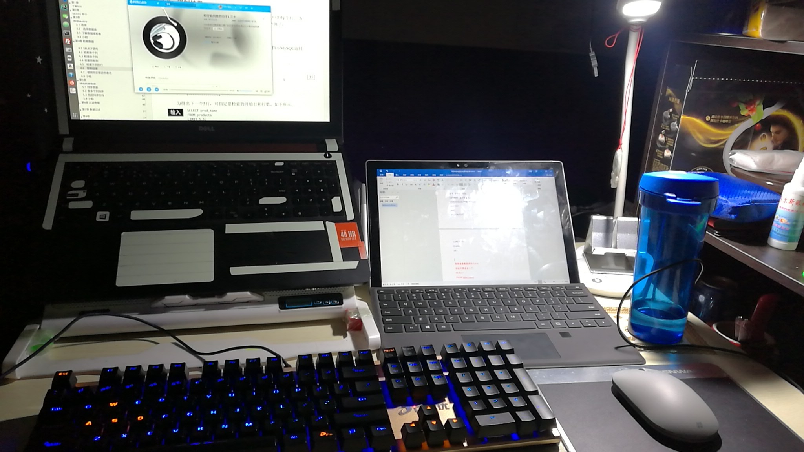
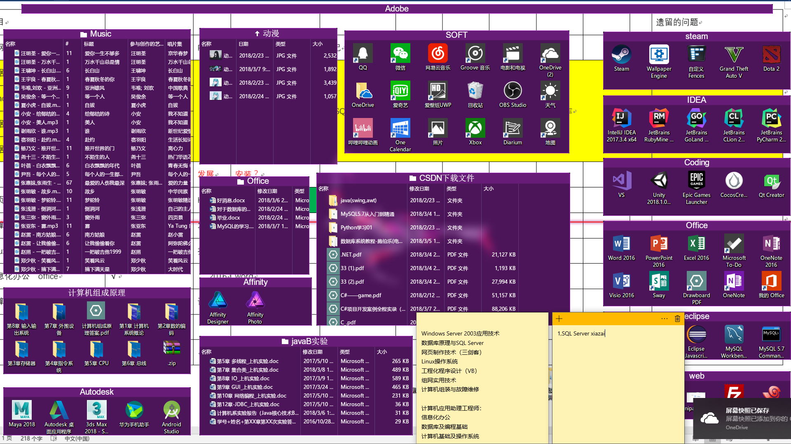
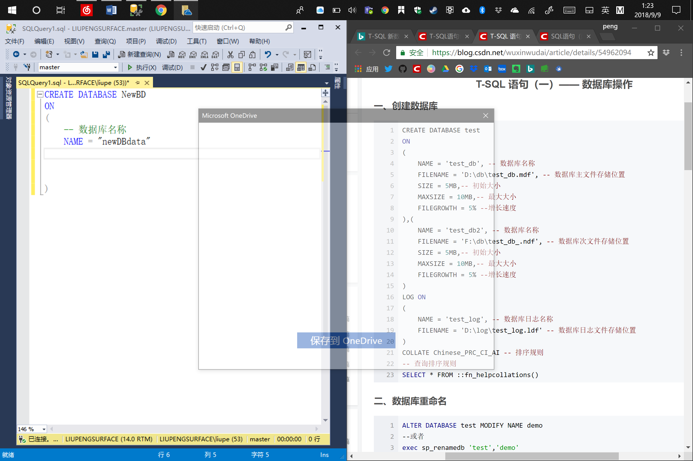
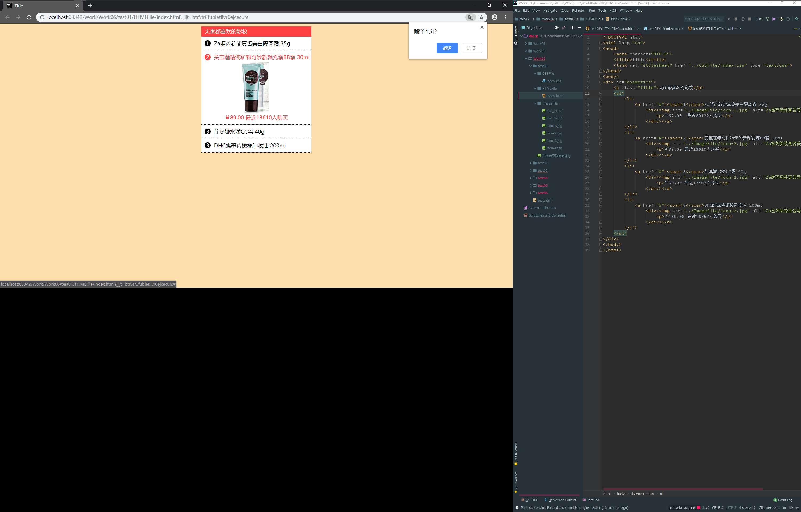

这里又为什么要有7张图片呢, 主要是为了无缝的优化，无缝滚动。 当你从最后一张图切换回第一张图时，有很大空白，利用两张辅助图来填补这个空白。 这里补充下无缝滚动，直接看代码，复制最后一张图片放置第一张图片前，同时复制第一张图片放置最后一张图片的后面。并且，将第一张图片辅助图（实际上是实际显示的第5张图片隐藏起来，故设置style="left: -600px;"）




//小圆点
<
>